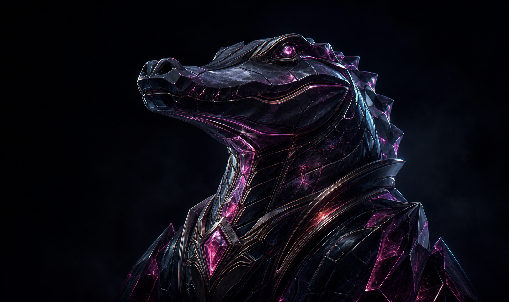

Активный модульOnline Fix
Готов к установке и восстановлению
Единое пространство для настройки игр, управления сетевыми компонентами и будущих инструментов.

Готов к установке и восстановлению
Поиск и резервное копирование прогресса
Выборочная разблокировка дополнений
Игры в библиотеку Steam через манифесты
Библиотека и запуск игр через профили KVC или DRV
Актуальные кряки с билдом, паролем и загрузкой
Полезные программы и сетевые инструменты
Сканирование, настройка Steam и поддержка Epic Online Services в одном потоке.
Укажите корневую папку — движок сам найдёт нужные компоненты.
Параметры сетевого окружения и контента.
Пошаговое исправление запуска и создания лобби: сначала EpicFix, затем при необходимости восстановление оригинального EOS.
Перед изменением существующие файлы будут сохранены в .backup_orig.
Найдите установленные игры Steam, выберите игру и настройте её дополнения.
Нажмите «Сканировать», чтобы найти игры во всех библиотеках Steam.
Укажите корневую папку — приложение само найдёт библиотеку Steam и определит игру.
Для смены способа сначала удалите установленный анлокер.
Оставьте включённым «Разблокировать все» либо снимите отметки с ненужных дополнений.
Определите игру, чтобы загрузить список её дополнений.
Совместимость с играми, проверяющими подпись библиотеки.
Оригинальная библиотека Steam сохраняется и восстанавливается при удалении.
Поиск игрового прогресса в стандартных папках Windows, игровых движков, Steam и распространённых эмуляторов.
Снимите отметку с папок, которые не нужно добавлять в архив.
Нажмите «Найти сохранения», чтобы проверить популярные расположения.
Создайте архив или восстановите его — сохранения автоматически попадут в исходные папки.
Добавляйте игры прямо в библиотеку Steam. Перетащите файлы .lua, .manifest или .zip — программа сама разложит их по нужным папкам Steam. Затем перезапустите Steam, и игра появится в клиенте.
Добавляет кнопку «Получить манифест» на страницы игр в магазине Steam и автоматически размещает полученные файлы в нужных папках.
Введите название или AppID — выберите игру, и манифесты автоматически попадут в нужные папки Steam.
Файлы автоматически помещаются в нужные папки Steam (stplug-in, depotcache).
Отключайте, удаляйте или обновляйте список. После изменений перезапустите Steam.
Перетащите файлы игры выше, чтобы добавить её в Steam.
Добавляйте EXE игр, выбирайте профиль KVC или DRV и запускайте подготовленную конфигурацию из одного окна.
Профили работают с системными компонентами Windows. Перед запуском сохраните важные данные: несовместимый драйвер может привести к перезагрузке или BSOD.
Добавьте исполняемый файл игры.
Выберите игру и назначьте ей профиль запуска.
Нажмите «Добавить EXE» и выберите исполняемый файл игры.
Поиск установленных служб, драйверов, папок и записей популярных античитов. Перед очисткой создаётся локальная резервная копия.
Удаляются только заранее известные записи и пути выбранного античита.
Для запуска игры в тестовом режиме отключите Secure Boot в BIOS/UEFI. После включения или выключения режима требуется обычная перезагрузка Windows.
Состояние определится после сканирования.
Нажмите «Сканировать», чтобы проверить Code Integrity.
Отключаются только активные параметры. Исходное состояние сохраняется для отката.
Актуальные кряки из каталога Пиратской Станции с загрузкой прямо внутри приложения.
Подключаемся к Gist и проверяем список файлов.
→ Скачайте файл и установите программу.
→ После установки откройте Zapret2 (НЕ запускайте ZapretHUB!).
Так программа будет работать правильно.
→ В интерфейсе перейдите во вкладку «Мои пресеты».
→ Внизу выберите пресет, желательно тот, где есть ALT
(это повысит шансы).
→ После выбора пресета попробуйте запустить загрузчик.
→ Если ничего не загрузилось:
1) Вернитесь в «Мои пресеты»
2) Выберите другой пресет
3) Попробуйте снова
Гена рядом, пока ты играешь.
Откуда искать и получать манифесты для вкладки CrocLua.
Порядок, вид и видимость модулей — под тебя.
Проверка новых версий через официальный репозиторий Crocodile Gena Studio.